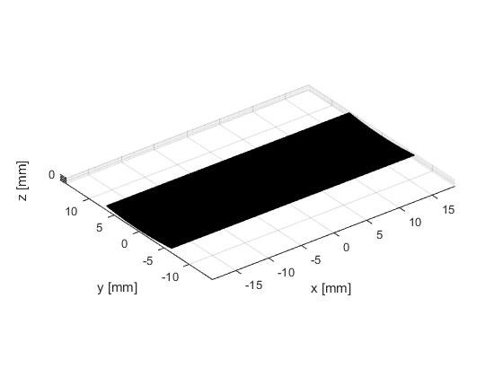
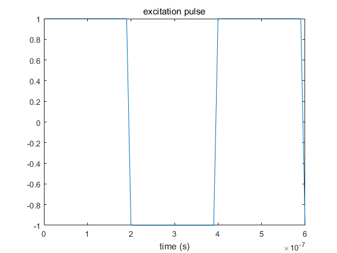
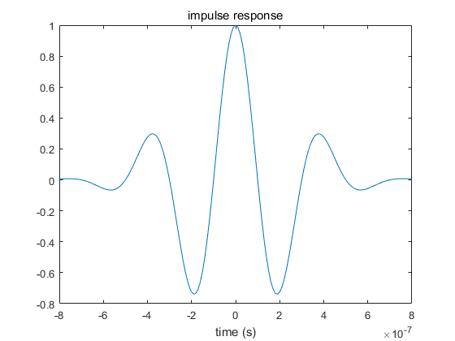
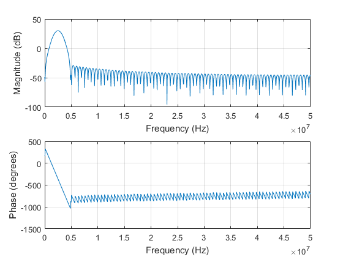
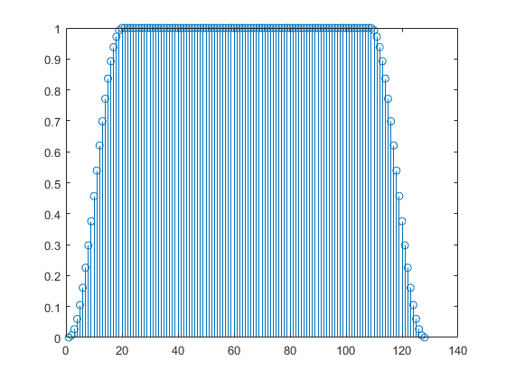
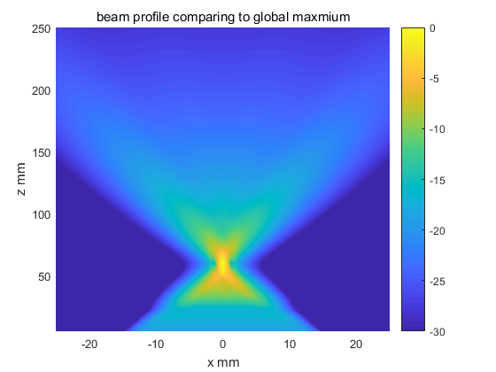
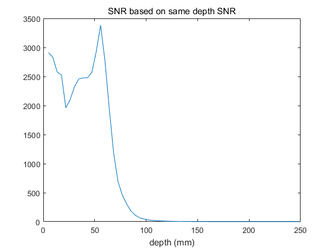
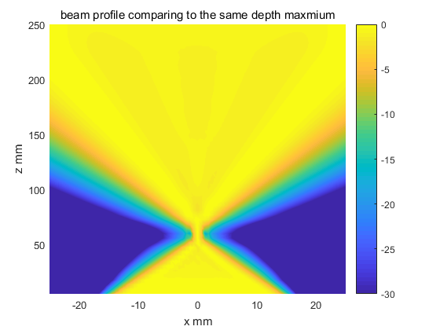

Contents
close all;
clear all;
no_elements = 128;
pitch = 0.29e-3;
kerf = 0.025e-3;
width = pitch - kerf;
height=13e-3;
no_sub_x = 5;
no_sub_y = 30;
focus = [0 0 60]/1000;
Rfocus = 60e-3;
c =1540;
field_init(0);
Th = xdc_focused_array(no_elements, width, height, kerf, Rfocus, no_sub_x, no_sub_y, focus);
figure;
show_xdc_geir(Th, 1);
axis equal;
view(3);
fs = 100e6;
f0 = 2.5e6;
t0 = 1/f0;
dt = 1/fs;
set_sampling(fs);
*------------------------------------------------------------*
* *
* F I E L D I I *
* *
* Simulator for ultrasound systems *
* *
* Copyright by Joergen Arendt Jensen *
* Version 3.24, May 12, 2014 (Matlab 8.20 version) *
* Web-site: field-ii.dk *
* *
* This is citationware. Note the terms and conditions *
* for use on the web-site at: *
* field-ii.dk/?copyright.html *
* It is illegal to use this program, if the rules in the *
* copyright statement is not followed. *
*------------------------------------------------------------*
Read rectangular data for plotting....
Plots aperture with physical element number...
Warning: Remember to set all pulses in apertures for the new sampling frequency

Impulse setup
t_ir = -2/f0:1/fs:2/f0;
Bw = 0.6;
impulse_response = gauspuls(t_ir, f0, Bw);
xdc_impulse (Th, impulse_response);
figure;
excitation = square(2*pi*f0*(0:dt:1.5*t0));
plot(0:dt:1.5*t0, excitation);
xlabel("time (s)");
title("excitation pulse");
xdc_excitation(Th, excitation);
figure;
plot(t_ir, impulse_response);
xlabel("time (s)");
title("impulse response");
figure;
freqz(impulse_response,1,1024,fs);
  
setup tx Apod
txApodWeights = tukeywin(no_elements, 0.3)';
figure;
stem(txApodWeights);
xdc_apodization(Th, 0, txApodWeights);

pressure response from x=-15mm to x=15mm, depth 5~150mm
Nx = 81; Nz = 59;
x0=linspace(-25e-3,25e-3,Nx);
z0=linspace( 5e-3,250e-3,Nz);
[X,Z]=meshgrid(x0,z0);
measure_point = [X(:), zeros(length(X(:)),1),Z(:)];
[hp_x0, t_start]=calc_hp(Th, measure_point);
figure;
tAx_hp = t_start+(0:length(hp_x0)-1)/fs;
rms_hp_x0 = rms(hp_x0);
rms_hp_x0 = rms_hp_x0/max(rms_hp_x0);
BPmatrix = reshape(rms_hp_x0,Nz,Nx);
pcolor(x0*1000,z0*1000,20*log10(BPmatrix));
shading interp
colorbar;
caxis([-30 0]);
xlabel("x mm");
ylabel("z mm");
title("beam profile comparing to global maxmium");
BPmatrix = rms(hp_x0);
BPmatrix = reshape(BPmatrix,Nz,Nx);
BPmatrix_s = max(BPmatrix');
BPmatrix_n = min(BPmatrix');
BPmatrix= BPmatrix./repmat(max(BPmatrix')', 1,Nx);
SNR = BPmatrix_s./BPmatrix_n;
figure;
plot(z0*1000,SNR);
xlabel("depth (mm)");
title("SNR based on same depth SNR");
figure;
pcolor(x0*1000,z0*1000,20*log10(BPmatrix));
shading interp
colorbar;
caxis([-30 0]);
xlabel("x mm");
ylabel("z mm");
title("beam profile comparing to the same depth maxmium");
75.8 % performed (roughly 2 seconds remaining) 7 seconds used for the calculation
  